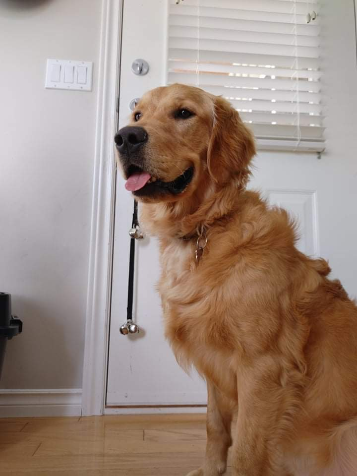

Rafa's Food: Baked Salmon

This is the food we will be making, but we will be customizing it to make it dog friendly!
Who is it for?
The world's most high maintenance dog possible. See photo attached:

Description
A healthy meal of Rafa's favourite classic -- salmon. This is a treat for him only when he's a goodie boy...
Ingredients and Materials
- Salmon, preferably organic and sliced
- Baking sheet
- Baking pan
Steps
- Pre-head the oven
- Take the salmon out of the fridge and put it on a baking sheet
- Put the baking sheet, with salmon on it, on the baking pan
- Put it in the oven and wait for about 15 mins; eye ball readiness
- Wait for it to cool down because Rafa cannot eat HOT food!!!